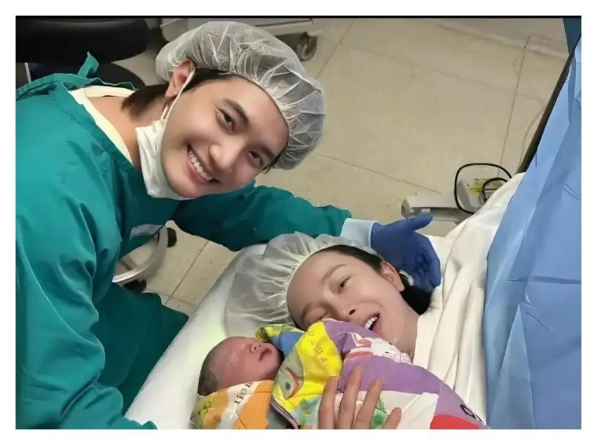
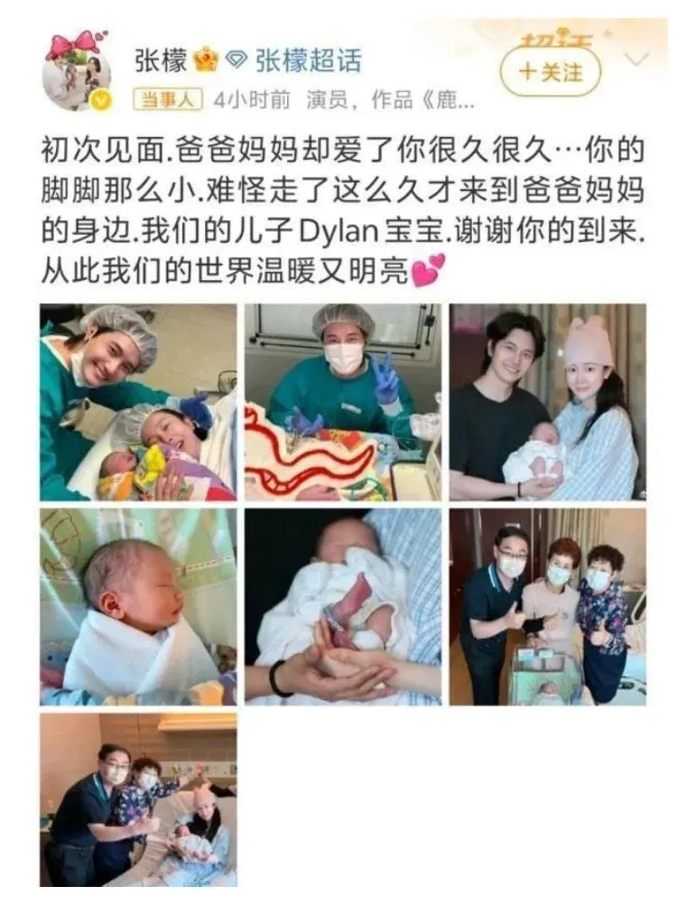
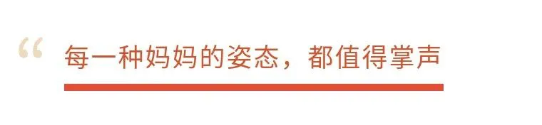

文|圆圈妈妈
昨天刷到张檬官宣生子的新闻，状态极佳、笑容灿烂，图文像是韩剧婚后番外。

她住着深圳最贵的月子中心，
选的是传说中的“56天至尊套房”：
营养月餐三餐三点，专业护理二十四小时，还有摄影师全程跟拍...
——每一张都是“妈妈即女主”的剧照。
我看着她幸福“开箱迎娃”的图文，一边点了个赞，一边默默想起10年前我剖腹产双胞胎的那一刻：
手术灯刺眼，刀光寒冷，输液管乱飞...
我不是“开箱”，我是“开膛”。
没有仪式感，没有大片，连翻个身都像越狱，惊险刺激...
那一刻，生命来得震撼，而我狼狈至极。
忍不住心里一酸：
都是当妈，差别怎么就这么大？
张檬是在仪式感中“开箱迎娃”，
而我，是在止血针中“开膛剖娃”。
她拍大片，晒美照，神采奕奕：
我拍X光片（产后大出血），疼得死去活来，睁眼都费劲。
她十指不沾阳春水，
我十指全沾奶和屎。
她的孩子出生自带C位，
我的两个孩子一出生就进了NICU。
张檬老公金恩圣比剪刀手那张图我刷了好几遍，真的好甜。
而我老公呢？
别说借他10086个胆去剪脐带了，签个术前同意书都能手抖腿软，
坐在手术室外，全程眼神呆滞，六神无主...
好像被剖的人是他， 而不是我。
张檬的月子像度假：百万级套房、两名专护护士、百日随行服务、每天都有爱和光。
我剖完第3天，刀口还没愈合，医生就用“床位紧张”的理由把我“清出战场”，急急忙忙给我开出院单。
出院那天，老公拎着大包小包在前面跟一群大妈在抢出租车，
我被婆婆和小姑子“五花大绑”地架着走
好像打败仗的老将残兵...
坐月子那会儿根本没有“精致”二字，
唯一能称得上“专业护理”的，大概就是婆婆每天看我吃饭时的眼神，
看看我是不是吃咸了、辣了、凉了…
我那阵子连镜子都不敢照。
孩子住在保温箱，我一个人在家坐月子，情绪像坐滑梯，整天掉眼泪。
雌激素一降，睡眠一塌糊涂，最难熬的不是刀口，
是那种“娃不在身边”的落空感。
没有人告诉我：“你不是矫情，是产后激素在打架。”
我一边咬牙吸奶，一边偷偷百度“产后抑郁怎么办”，
还怕被人笑，说我太脆弱。
张檬官宣产子的文案温柔又克制：“初次见面，爸爸妈妈却爱了你很久很久...”

我真心替她开心，
毕竟每个妈妈都值得被温柔对待。
她有最够的资源、有专业的团队、有爱她的伴侣，
她值得拥有这样的生产体验。
但也忍不住感慨，
像我们这批“手起刀落型”妈妈，
真的走过了最野、最原生态的路。
没有仪式感，没有剧本，没有高光滤镜，
只有现实、疼痛、血、泪和咬牙的意志。
但——孩子健康长大了，我们也都活下来了。
不是靠专业团队，而是靠本能。
我们没有多少人能像明星那样在鲜花和掌声中迎来新生命，
但我们在刀口的痛里、在夜里一口一口喂奶的困意里，
活成了“披着围裙的战士”。
10年过去了，我的两个孩子也慢慢长大。
我也不再是那个半夜抱着孩子偷偷抹泪的新手妈妈。
如今的我，能一边看着别人坐月子如度假，一边笑着说：“你们好幸福啊，但我也挺骄傲的。”
也许没那么多仪式感，
但我知道，我曾用尽全力，亲手迎接了两个生命的到来。
那就是我人生最真、最痛、也最值得骄傲的高光时刻。
这大概就是妈妈的成长线：
带着伤口，也带着光。
哪怕生得不够精致，也足够伟大。
哪怕没有台词，也是乘风破浪的姐姐。
这个牛逼， 我可以吹爆一辈子！
-END-
🌷
我们不是明星，
但我们都是真正的女主角，
是孩子心目中的超级英雄。
点个赞、转发这篇文，
致敬每一位在深夜与刀口中学会坚强的妈妈
